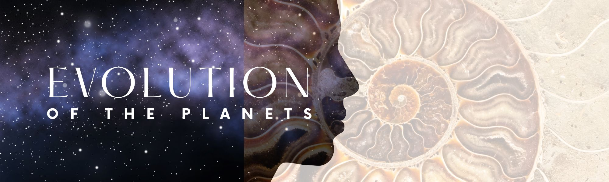
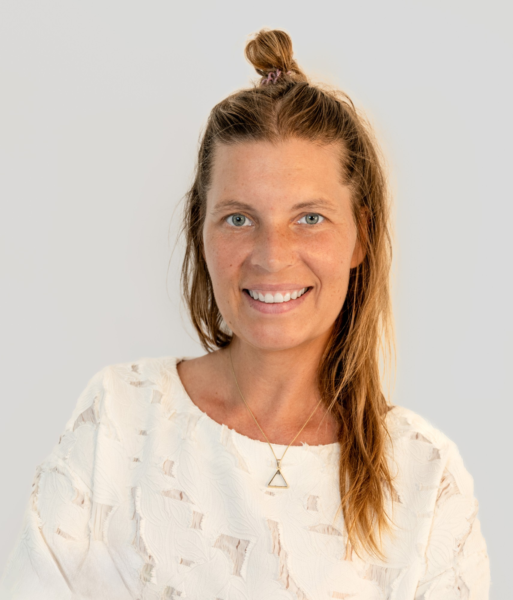
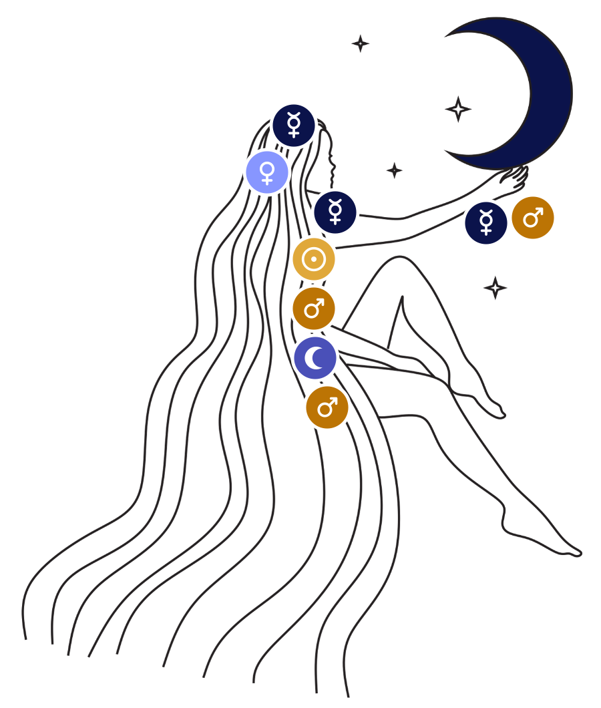

Next level astrology.
Viele verstehen ihre Astrologie, aber können sie nicht greifen. Was fehlt, ist kein weiteres Einzelwissen. Was fehlt, ist ein klares System, das alles verbindet.
EVOLUTION, ich bin dabei Start im Februar 2027. Nur 8 Plätze, für eine persönliche Atmosphäre.Deine Sternenkarte
Ein System, das:
Es ist ein strukturierter Prozess, der dir zeigt:
… und wie du den nächsten Schritt in deine Entfaltung gehst.
Ziel ist nicht, noch mehr zu wissen. Schöner Side-Effect ;)
Sondern:
„Nichts ist, alles wird.“ (Heraklit)
Leben ist kein fester Zustand, sondern ein lebendiges Werden, eine fortwährende Entfaltung.
Astrologie ist so viel mehr als die „fancy“ Sprache des Kosmos.
Mehr als ein Konzept aus Himmelskörperbewegungen.
Mehr als 12 Schubladen mit nettem Etikett.
Februar bis Juli 2027
Die 5 persönlichen Planeten. Zwei Live-Calls pro Monat, jeweils mittwochs um 19 Uhr.
Die Inhalte bauen aufeinander auf und werden Schritt für Schritt integriert.
Kosmische Weisheit in Form gegossen.
Für wen ist das?
Buchung
Nur 8 Plätze
einmalig
oder in Raten: 3 × 927 € · 6 × 467 €
+ Bei Anmeldung bis 10.1. ist eine 1:1 Session (60 Min.) mit mir inklusive.
Über mich
Astrologin, Beraterin und die Stimme hinter Astro mit Herz. Angefangen hat alles 2019 mit einer Session zu meinem eigenen Geburtshoroskop. Diese eine Deutung hat so viel in mir sortiert, dass ich seitdem nicht mehr mit der Astrologie aufhören konnte ;)
Hinter EVOLUTION steht fundiertes Wissen: ein Studium der Psychologischen Astrologie an der DAV-zertifizierten Astropraxis Hamburg, die Fachmitgliedschaft im Schweizer Astrologenbund, mehrere Fort- und Weiterbildungen, unter anderem bei Petra Dörfert und Lynn Bell, und die Schule des Lebens :)
Die Sprache des Kosmos wird zugänglich, tief und lebendig. Geerdete Klarheit mit Herzenswärme.
EVOLUTION, was sich bewegt hat
„Ich spüre mehr, mein Körper ist für mich präsenter. Die Verbindung der Emotionen zum Körper, zur Handlung und zu Gedanken, hier bewusster gewisse Einflüsse zu erkennen und die mögliche Veränderung durch mich.“
„Am meisten Freude haben mir die Übungen zu meiner Venus gemacht. Das Annehmen ist wunderschön. Ich habe schon zwei neue Dinge ausprobiert, ohne es zu zerdenken.“
„Ich mag deine Art, Astrologie zu vermitteln, sehr. Fühlen und denken in Kombination. Auch lerne ich gut über deine Bildsprache.“
„Die Rückverbindung zu sich selbst ist immer der Schlüssel zu mehr Freiheit und einem selbstbestimmten Leben. Total gut, vertiefend und auch für später immer wieder zum Stöbern.“

NEU in EVOLUTIONZu jedem Planeten gibt es eine Nervensystem-Session mit Melli. Als Integration dessen, was du im Monat erlebt hast.
Verstehen passiert im Kopf, Veränderung im Nervensystem. Es entscheidet, wie du auf Druck, Nähe, Konflikte und Stille reagierst. Genau das sind die Themen der Planeten. In der Session erlebst du den Planeten des Monats im Körper, statt nur über ihn nachzudenken. So wird aus Astrologie etwas, das dich wirklich verändert.
Die fünf Sessions finden jeweils donnerstags um 9 Uhr statt, 60 Minuten lang:
Kopf und Herz verbinden. Veränderung spüren.

Planeten im Körper
Genau dort setzt die Session an. Du spürst, was du im Call verstanden hast.
„Der Himmel ist in dir.“ (Angelus Silesius)
Die Aufzeichnung aller Calls steht dir zur Verfügung.
Genau dann ist es relevant. EVOLUTION setzt nicht beim Wissen an, sondern bei der Umsetzung. Du arbeitest nicht daran, noch mehr zu verstehen, sondern daran, das, was du längst weißt, wirklich zu leben. Geerdete Astrologie :)
Grundkenntnisse sind sinnvoll: Planeten und Tierkreiszeichen solltest du kennen. Eine komplette Ausbildung brauchst du nicht. Vor allem brauchst du Neugier, für Astrologie und für dich selbst.
Nein. Astrologie ist die Grundlage, aber es geht nicht darum, noch mehr Inhalte zu lernen. Im Fokus steht, wie sich deine Konstellationen konkret in deinem Alltag zeigen und wie du beginnst, sie bewusst zu leben.
Unbegrenzt. Du kannst alle Aufzeichnungen jederzeit wieder anschauen und bekommst praktische Übersichten dazu, zum Ausdrucken, Aufhängen oder für die digitale Nutzung.